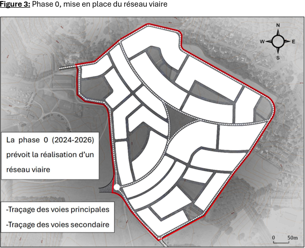
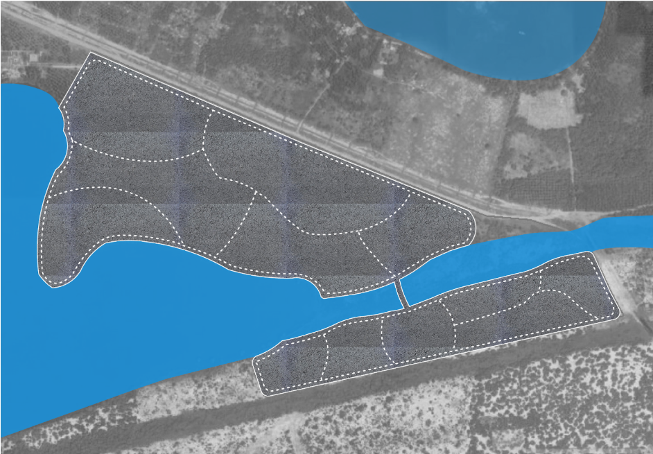
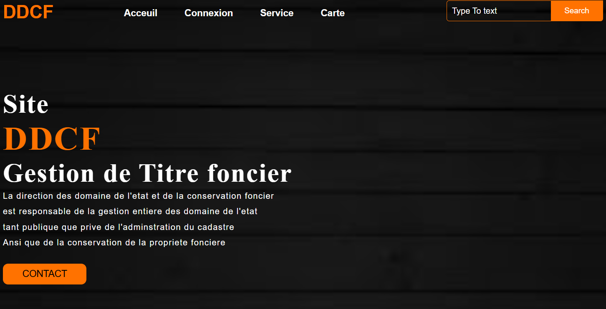
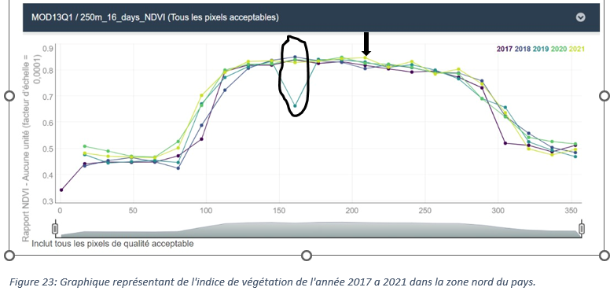

Développement d'un site web interactif pour la valorisation du patrimoine et du tourisme en
Normandie
Dans le cadre d'un concours organisé par la région Normandie,
j'ai collaboré avec une équipe pluridisciplinaire pour concevoir et développer un prototype de
solution numérique innovante en un mois. L'objectif était de manipuler, analyser et valoriser
des données open data liées au patrimoine et au tourisme, tout en ayant un impact positif sur le
territoire normand et sa population.
Notre site web offre une expérience interactive et personnalisée pour
explorer le patrimoine normand. Grâce à la géolocalisation, il vous propose une sélection de
sites patrimoniaux à proximité,
en fonction de votre position et du temps que vous souhaitez y consacrer (15, 30 minutes ou 1
heure). Vous pouvez planifier votre
itinéraire en choisissant votre moyen de transport (marche, vélo, voiture, etc.) pour accéder
facilement à ces lieux. Le site intègre
également une fonctionnalité de réservation d'hôtels labellisés écoresponsables, pour un séjour
durable. Pour enrichir notre base de données,
des formulaires permettent aux utilisateurs de partager leurs avis et suggestions. Une carte 3D
interactive offre une visualisation immersive
des sites, avec des options de filtrage par époque et par département, pour une exploration
adaptée à vos centres d'intérêt.
Analyse de l'évolution de l'occupation des sols dans le Beauvaisis (2006-2012)
L'objectif de ce projet est de créer une application web interactive avec Shiny
qui permet d'explorer et d'analyser
les données d'occupation des sols dans la région de Beauvaisis, en France. L'application permet
aux utilisateurs de visualiser les changements
dans l'occupation des sols entre les années 2006 et 2012 à l'échelle des communes, en affichant
une carte interactive, des graphiques et un tableau des surfaces totales par catégorie
d'occupation des sols.
Pour ce projet, j'ai utilisé Leaflet pour la cartographie interactive, en
combinant HTML, CSS et JavaScript pour
structurer, styliser et ajouter des fonctionnalités interactives à la carte. J'ai également
travaillé avec des données géospatiales pour assurer la précision
et la pertinence des informations affichées.
Carte interactive de la densité de la métropole de Rouen (2022)
L'objectif de ce projet était de créer une carte interactive visualisant la
densité de population au sein de la métropole
de Rouen pour l'année 2022. Cette carte permet de mieux comprendre la répartition des habitants
sur le territoire,
en mettant en évidence les zones à forte densité et celles plus faiblement peuplées.
Pour ce projet, j'ai utilisé Leaflet pour la cartographie interactive, en
combinant HTML, CSS et JavaScript pour
structurer, styliser et ajouter des fonctionnalités interactives à la carte. J'ai également
travaillé avec des données géospatiales pour assurer la précision
et la pertinence des informations affichées.
Évaluation d’un modèle climatique par une approche géospatiale.
L’objectif principal de cette étude est d'analyser la performance du modèle
climatique CLMNCC pour simuler les précipitations
à Djibouti, en comparant les simulations aux données d'observation. Cette analyse est
essentielle pour comprendre les dynamiques climatiques
et leur impact sur des régions vulnérables comme Djibouti. En outre, ce projet vise à évaluer la
capacité du modèle à reproduire le climat passé et actuel de Djibouti en termes de
précipitations
Méthodologie : Traitement de données avec Python.
Projet d'aménagement urbain durable
Projet n°1 : Conception d'un éco-quartier à Angers, France
Dans le cadre de ma formation en géomatique appliquée à la dynamique
territoriale,
j'ai réalisé un projet académique en groupe qui consistait à la mise en place d'un éco-quartier
à Angers, en France.
Nous avons utilisé des documents urbains existants pour élaborer une proposition qui respecte
les principes du développement durable.

Projet n°2 : Création d'un parc urbain à Abidjan, Côte d'Ivoire
Ce projet porte sur la création d'un parc urbain dans une zone sensible
d'Abidjan. Dans ce projet, nous avons également
utilisé des documents urbains pour proposer un plan d'aménagement visant à limiter l'étalement
urbain et à réduire les risques d'inondation.
J'ai prispart à l'analyse géospatiale des zones à risque et à la mise en place d'un aménagement
paysager adapté pour préserver les écosystèmes locaux.

Évaluation d’un modèle climatique par une approche géospatiale.
L'objectif principal de ce projet était de créer une base de données spatiale
qui englobait toutes les informations relatives
aux propriétés foncières d'une commune. Ensuite, j'ai mis au point une application SIG web pour
centraliser les données foncières,
y compris les plans et autres informations associées. Cette application a simplifié la gestion
et l'accès à ces données pour les utilisateurs

Analyse spatio-temporelle par télédétection et SIG
Projet n°1 : Développement d’une méthode de cartographie des services écosystémiques par
télédétection dans 3 sites pilotes de la région méditerranée
L’objectif de ce projet est de développer des indicateurs permettant de
caractériser l’évolution spatio temporelle des services
écosystémiques rendus par les sols dans 3 sites pilotes situés au Maroc, Egypt et Turquie.
L’idée consiste à utiliser des séries d’images Sentinel
2 pour calculer des indices spectraux qui permettent d’appréhender les sévices écosystémiques et
caractériser ainsi leur évolution spatio-temporelle sur le court terme.
Projet n°2 : Dynamique spatio-temporelle des mangroves à Djibouti
L'objectif de cette etude est double, d'une part mettre en evidence la dynamique
spatio-temporelle des
mangroves en nord du pays dans une periode intra-annuelle rt d'autre part,dans une periode
interannuelle.

Évaluation d’un modèle climatique par une approche géospatiale.
Voici quelques autres réalisations cartographiques,
mettant en œuvre des thématiques variées pour répondre à des enjeux territoriaux spécifiques.